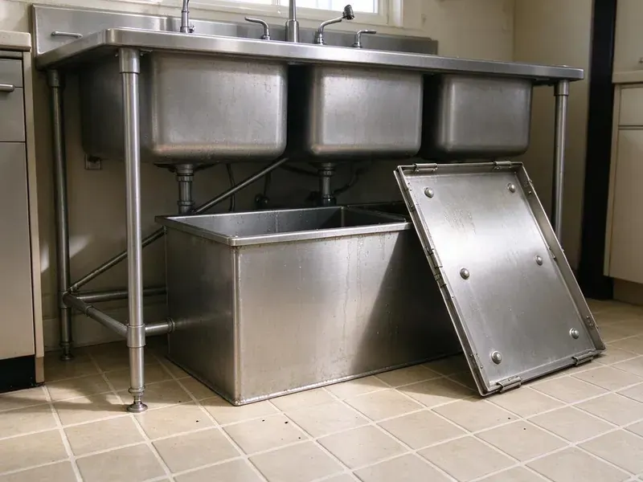

Grease Trap Repair in Cumberland Hill, RI
JPN Plumbing handles grease trap repair in Cumberland Hill, RI, from small indoor units to buried concrete interceptors.
- Parts for Major Brands
- Upfront Pricing
- Licensed & Insured
- Work Guaranteed

Fix the Trap Before the Inspector Finds It in Cumberland Hill, RI
A broken trap can shut a kitchen down. Call and we will send the closest truck.
Reliable Grease Trap Repair in Cumberland Hill, RI
JPN Plumbing handles grease trap repair for restaurants, schools, churches with kitchens and the occasional home in Cumberland Hill. Commercial work is most of it. Every repair is done to the plumbing code Rhode Island has adopted and to the local pretreatment rules, because a trap that works but fails inspection still costs you a fine and a return visit. We know the checklist inspectors carry.
Our expertise includes:
- Replace missing inlet and outlet tees
- Repair or replace damaged interceptor baffles
- Find and fix leaks in trap bodies and fittings

Additional Kitchen Plumbing Services in Cumberland Hill, RI
Our kitchen plumbing services in Cumberland Hill, RI cover sinks, disposals, dishwashers, and grease traps so your kitchen stays clean, safe, and fully functional.


Customers
Why Choose JPN Plumbing for Grease Trap Repair in Cumberland Hill, RI?
FOG, short for fats, oils and grease, is the reason the trap exists. Past the trap, it cools and turns solid in the sewer main. Most cities run a pretreatment program that inspects grease traps on a schedule and fines kitchens whose traps are damaged, missing parts or overdue for pumping. A working trap keeps you off that list.
- Specialized Tools, Jetters and sewer cameras let us find the blockage and clear it instead of guessing.
- Quality Parts, Manufacturer parts or commercial-grade materials that hold up to grease and hot water.
- Honest Advice, If a trap is past saving, we tell you and price a replacement.
Citywide Coverage
Off-hours scheduling is how we keep repairs from costing you a service. We can start after close and finish before prep. That matters most for in-floor traps in the kitchen, since the work area is the floor your line cooks stand on all day. We clean up before we leave.
Experienced Team
Small under-sink units and 2,000-gallon outdoor interceptors take different skills. Our crew handles both. Hydromechanical traps are about flow control and venting, while gravity interceptors are about concrete condition and safe entry under confined space rules. We practice on actual equipment, not slides.
Safety-First Approach
Every repair meets the local plumbing code and the pretreatment rules for your sewer district. Where a permit is needed, we pull it. We also leave the trap with its sample port open and accessible and its lid secure, since inspectors check both, and a trap that works but cannot be sampled can still get written up. Those small details carry real fines.
Trusted Certified Cumberland Hill Plumbing Services Professionals
At JPN Plumbing, we are proud to offer certified plumbing services throughout Cumberland Hill, RI. Those papers on the wall mean something. Our plumbers hold recognized industry credentials, and they follow strict safety and quality rules on every repair, installation and maintenance call we run.
Call Us Now PHCC Plumbing Contractor Recognition
PHCC Plumbing Contractor Recognition Better Business Bureau (BBB) Accreditation
Better Business Bureau (BBB) Accreditation Angi Certified Pro
Angi Certified Pro ISO 9001 Quality Management Certification
ISO 9001 Quality Management CertificationGrease Trap Repairs We Handle in Cumberland Hill, RI
Commercial Grease Trap Repair in Cumberland Hill
Restaurants, school cafeterias, hospital kitchens and bakeries all push more grease than a small trap can hold. Undersized traps fail in predictable spots. The inlet tee clogs, the outlet tee gets coated, and grease starts showing up in the sewer manhole down the street, which is usually how the city finds out before the owner does. We repair what broke, then tell you straight whether the unit is sized for your volume.

Damaged Baffle and Lid Repair in Cumberland Hill, RI
Lids crack when someone sets a stockpot on them or a dolly rolls across a floor-mounted unit. A cracked lid lets odor out and lets mop water in. We replace the lid and gasket with the manufacturer part, and on in-floor units we check that the lid sits flush so nobody catches a toe or a cart wheel on it. Baffle damage often shows up at the same visit.
Inlet and Outlet Tee Repair in Cumberland Hill, RI
Tees are cheap parts with an outsized job. On the inlet side, the tee directs incoming water down under the floating grease. The outlet tee draws water from low in the tank, well under the grease cap, so if it breaks off or someone removes it during pumping, floating grease walks right out to the sewer. New tees go in as Schedule 40 PVC, cut to the drop length the manufacturer or local code specifies.
Preventative Grease Trap Maintenance & Repair in Cumberland Hill, RI
Most trap repairs we do trace back to pumping intervals that stretched too long. The common rule is to pump when grease and solids fill a quarter of the liquid depth. After a repair, we measure the grease cap and solids with a sludge judge and suggest a pumping schedule based on how fast your trap actually fills. Busy fryers fill a trap fast.
Flow Control Device Repair in Cumberland Hill
Hydromechanical traps are rated by flow, like 20 or 50 gallons per minute, and the flow control fitting is what holds the water to that rate. Without it, a full sink dump pushes grease straight through. Inspectors look for it. We also clear the air intake, since a plugged intake on the flow control fitting lets the trap siphon.
Baffle Repair and Replacement in Cumberland Hill
Inside a concrete gravity interceptor the baffle is usually a poured or precast wall with a crossover opening. A crumbling wall lets grease slip into the second compartment and out the outlet. We can rebuild the wall with form work and a sulfate-resistant mix or set a polyethylene baffle panel, depending on the tank. Either way, it needs a full pump-out first.
Residential Grease Trap Repair in Cumberland Hill, RI
Homes rarely need a grease trap, but some have one, usually a small plastic unit under the kitchen sink on a house with a septic system or a home bakery. These leak at the lid or the threaded inlet. We replace the gasket, reset the fittings with fresh thread sealant, and clear any grease plug in the outlet. On most homes this is under an hour of work.

Grease Trap Odor Control & Repair in Cumberland Hill
A sewer smell near the trap means gas is getting out somewhere it should not. Most of the time it is a torn lid gasket or a dry floor drain nearby. We check venting on the fixture side too, because a sink with no vent can siphon its own trap seal and let sewer gas back into the kitchen. Cleaning alone will not fix a bad gasket.
Grease Trap Repair Near Me in Cumberland Hill, RI
Nearby crews matter most when the trap is outside under the parking lot. Pumping an interceptor takes a vacuum truck and a crew that can work around your customers. We line up the pump truck and the repair crew for the same morning, so the lot is open again before the lunch rush starts. Off-hours scheduling is available.
Searching for grease trap repair near me usually happens with water already on the floor. You want someone close, with a pump on the truck. Our commercial plumbers work out of Cumberland Hill, RI and know what the local pretreatment inspectors check and how they want a repair documented. We can usually be on site the same day.
JPN Plumbing at a Glance
- Fully licensed plumbing team covering Cumberland Hill, RI
- Same-day appointments and 24/7 emergency response
- Clear written estimates, no hidden fees
- 4.8-star rated by 684+ Rhode Island customers
Cumberland Hill Map
Cumberland Hill Information
- Population
- 8,140
- Area codes
- Local
- Service area
- Cumberland Hill and towns within a 40 mile drive
- Nearby
- Woonsocket, Valley Falls, Central Falls, Greenville
Grease cools and hardens in drain lines within a few feet of the sink, so a working trap counts in every commercial kitchen in Cumberland Hill, RI. Salt air near the coast can corrode exposed metal fixtures, outdoor spigots and fittings faster than inland.
Expert Services
Reach out to JPN Plumbing for honest, reliable plumbing from people who know the trade in Cumberland Hill, RI.
Our Specialized Plumbing Services in Cumberland Hill, RI
At JPN Plumbing, you get every kind of plumbing service from one company across Cumberland Hill, RI. From leak detection to full system installs, our team works fast and charges fair prices on homes and commercial properties alike. Explore our core services below:


How Our Grease Trap Repair Process Works in Cumberland Hill, RI
From your first call, we focus on finding the failed part fast in Cumberland Hill, RI.
Request a Quote
Call (401) 364-2507 and describe the leak, smell or backup. We book a visit and give a written estimate after inspection.
Inspect and Diagnose
We pump the trap if needed and check baffles, tees, lids and lines. You hear what failed and what it costs.
Repair and Test
We make the repair and run water through the trap to check that it holds grease. You get documentation for your files.
Frequently Asked Questions About Grease Trap Repair in Cumberland Hill
Minor clog clearing usually runs $200 to $400. Baffle replacement or a larger leak repair is more like $500 to $1,500. Concrete interceptor repairs, riser replacements and anything that needs excavation can go higher, and we give you a written estimate after inspecting the trap so you are not working from a phone guess. Emergency calls may cost more after hours.
Yes, from Zurn and Watts to Schier, Endura and Thermaco. Concrete gravity interceptors are part of the work too.
We repair Zurn, Watts, Schier, Thermaco, Endura, Rockford and most other commercial trap brands, along with poured and precast concrete interceptors. Parts get ordered by model number, and common ones ride on the truck.
Strainers in every sink and floor drain catch most of the solids before they reach the trap. Train staff to wipe greasy pans before washing. Keep pumping on a fixed schedule, and book an inspection once a year so a cracked lid or loose tee gets caught early. Small fixes stay small that way.
Size and location are the main difference. A grease trap is a small hydromechanical unit, usually indoors under or near the sink. An interceptor is a large gravity tank, often 750 gallons or more, buried outside the building and sized for high-volume kitchens. Both separate grease the same way.
Slow sinks at the dish station, a sour smell near the trap, and grease showing up in the outlet or the next manhole are the usual signs. An overflow onto the floor is the late one.
Look for a trap that smells even after pumping, drains that slow down at the same sinks, or water around the base of the unit. A string of grease violations usually means the trap is failing.
Gasket and clog work almost never needs one. Structural repairs or a change to the piping layout can. We check with the Cumberland Hill building department before major work and tell you up front if a permit and inspection will be part of the job. Any permit fee shows up as its own line.
What Our Customers Say About Our Plumbing Experts

Tyler J.
We bought a taller comfort height toilet for my dad, who just had knee surgery. The plumber pulled the old one, found the flange was cracked, and replaced it before setting the new bowl. Took about two hours.
Toilet Installation · Woonsocket, RI
Mark T.
The floor drain in our office break room backed up every few weeks. The plumber ran a cable, then put a camera down and found roots at a joint about thirty feet out. Seeing it on the screen made the decision easy.
Drain Cleaning · Central Falls, RI
Megan L.
Our upstairs tub drained so slowly that every shower turned into a bath. JPN Plumbing pulled a wad of hair out of the stopper and then snaked the line past the trap. Three months later it still drains fast.
Drain Cleaning · Providence, RI
Laura S.
Our 40 gallon tank started leaking from the bottom after thirteen years. The tech hauled the old one out, set a new unit with a fresh expansion tank, and had hot water running in about four hours. He took the old tank with him too.
Water Heater Replacement · Woonsocket, RIMonica A.
Our water bill nearly doubled in one month with no change in how we used water. The tech checked the meter, heard the leak under the hallway with his equipment, and opened a hole about a foot square. Fixed the same day.
Slab Leak Repair · Cumberland Hill, RIPaul B.
Our pit pump ran nonstop even in dry weather. The plumber found the check valve was stuck open, so the same water kept cycling back into the pit. New valve, new float switch, done in an hour. It runs quiet now.
Sump Pump · Valley Falls, RI